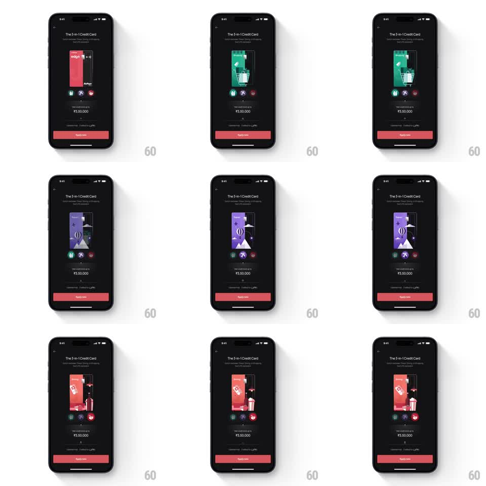

Media
Frame-by-frame

Rebuild this animation 1:1: Jupiter's 3-in-1 credit card showcase - three circular benefit tabs below the card art swap the card's illustration between shopping, travel, and dining themes with a springy scale and fade.

Rebuild this animation 1:1: Jupiter's 3-in-1 credit card showcase - three circular benefit tabs below the card art swap the card's illustration between shopping, travel, and dining themes with a springy scale and fade. ## Integration Integration: stack-agnostic spec - springs given as stiffness/damping, timed motions as duration + curve; map every value to your framework and animation library of choice. ## Scene Jupiter's dark product screen: "The 3-in-1 Credit Card" header, a tall card-art panel at center showing one of three colorful scenes (a red shopping scene with price tag and bag, a green travel scene with a trolley, a purple scene with a hot-air balloon), three small circular benefit icons in a row beneath the art, the "₹5,00,000" credit-limit copy, and a full-width red "Apply now" button at the bottom. Switching tabs swaps the art. ## Motion spec Pattern: tab-switched springy swap, ~600ms per switch. - Tapping a benefit icon activates it: the selected circle fills with color and its icon brightens while the previous one dims (200ms). - The current card art shrinks and fades out (scale to 0.9, 200ms, ease-in) as the new scene scales up and fades in from slightly small (spring stiffness 320 damping 20), landing with a soft overshoot. - The scenes carry different dominant colors, so the whole panel's mood shifts with each switch. - Header, limit copy, and Apply button stay fixed - only the art and tabs move. ## Calibration - The swap is quick and springy, never a slow crossfade - overshoot on arrival is the signature. - The active tab state is unmistakable: filled circle versus outline. ## Reduced motion Art crossfades; tab state changes instantly. ## Don't miss - Each scene is an illustration inside a fixed rounded panel - the panel itself does not resize. - The three tabs sit between the art and the copy, always visible.